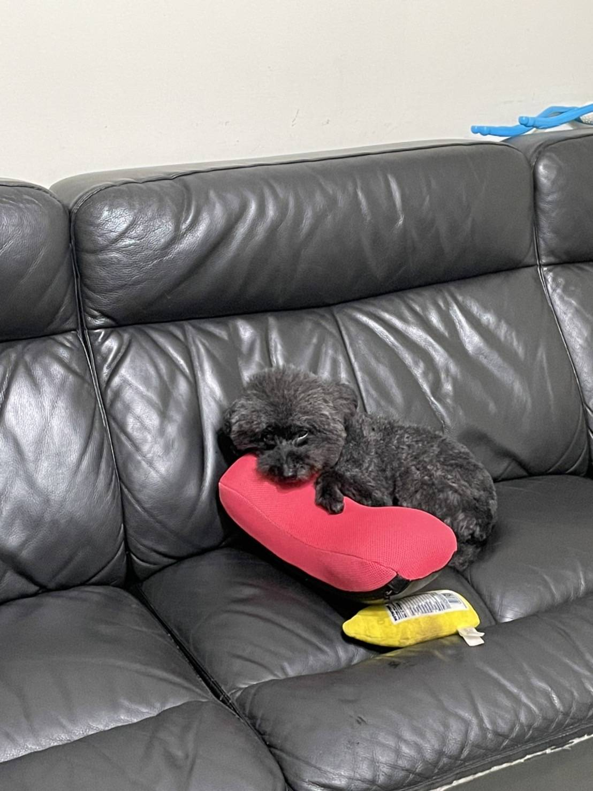
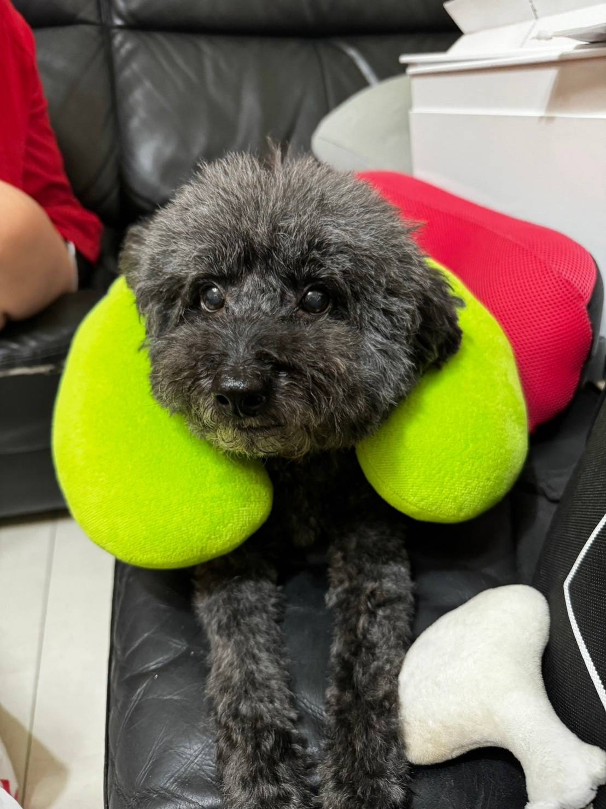
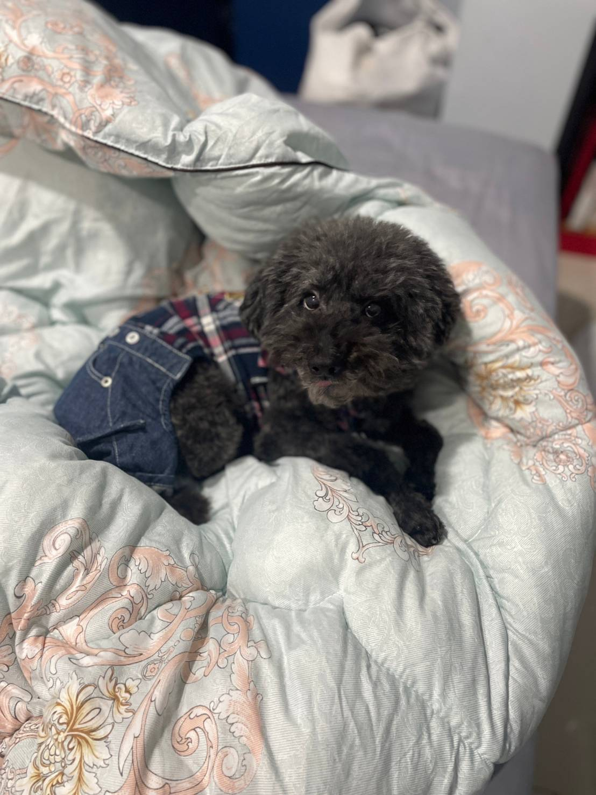

我是一位喜歡參與平常沒辦法接觸到的文化的人，我也很喜歡將自己很想學習的東西變成自己的技能的人，因為這樣的性格導致我學到了許多東西，也接觸到了許多不同的文化，讓我在與同濟溝通時可以很快的參與話題，也在參與不同事物時熱在其中。
01.
家庭背景
體驗是最好的成長
「家和萬事興」是我們家中互相勉勵與期許的原 則，奠定了我做人處事的態度與看法。從小生活在和 諧的家庭，每週會與家人一同去戶外爬山露營，在露 營活動中更是學會了養成對自己的責任感，同時也領 悟到最好的成長則需要在參與中體驗，在體驗中感 悟，在感悟中思考，在思考中成長。在家中排行老 么，扮演著家庭的潤滑劑，調節家庭紛爭，學會了換 位思考。
自傳
02.
求學經驗
有志者事竟成
由於家裡從商的緣故，國中畢業後便選擇進入商職體系，希望專業知識 能和實務尋找出一個結合點，培養一技之長。高中三年，在班上曾擔任過班 級幹部及會計小老師，讓我學習到更多待人處事的道理與領導及規劃的能 力，也深刻體會到當一個領導者應有的態度和風範。除此之外，我也獲選為 商業類全國技藝競賽會計資訊組競賽選手，在製作報表的過程中，花了許多 精力與時間，把握機會努力學習與運用，充實了我會計資訊這方面的經驗。 在比賽之中，我學了克服緊張，靜下心，一步一腳印的完成報表，盡心盡力 的完成這場比賽。因有了這次機會，學習到做事態度不可馬虎，也加強邏輯 思考能力，使細心度與數字敏銳能力增進不少。
自傳
03.
興趣與專長
動靜皆宜,展現自我
求學期間參與露營活動及滑板運動，皆為生活添滿了 色彩。在露營前，我會準備裝備清單並細心核對；在露營 進行的過程中可展現自我要求與堅持，沉浸在大自然中揮 灑汗水，與夥伴們同心協力，漸漸的培養出興趣，磨練了 毅力與耐性，為自己奠定獨立自主的能力，雖然在團隊中 並不是主要的領導者，但小螺絲釘也能發揮大力量，這讓 我學習到做任何事不論在哪個位置都要互相合作、有責任 心，並且融合自己的專長與興趣。
自傳關於我
人格特質
活潑
隨和易處
反應敏捷
樂於助人
認真勤勉
興趣專長
玩滑板影音剪輯
露營
打撞球
夾娃娃
技能證照
乙級軟體技術士證照丙級會計事務技術士證照
TBSA商務企業能力分級檢定
數位能力檢定基礎級
商教英檢四級




比賽經歷
聯合盃全國作文大賽
全國閱讀心得寫作比賽
全國金融投資競賽
全國電商之星團體賽
校內科展－小論文